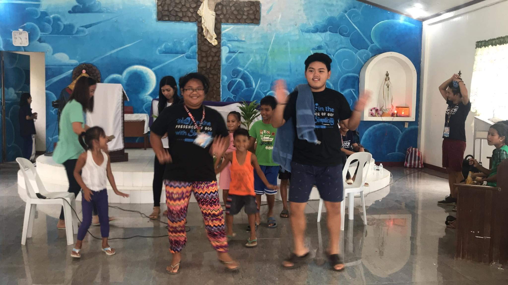
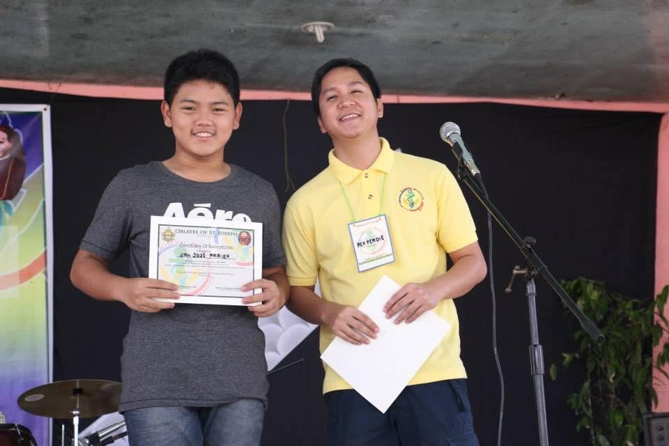
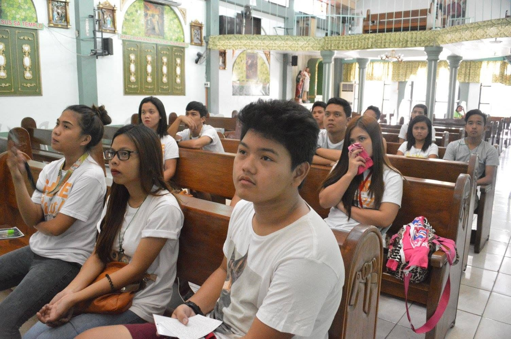

Member · 2016-April 2018
The first stage was participation: learning the rhythms of the organization, joining activities, observing how decisions were made, and understanding the relationships that sustained youth involvement.
Reflections · Leadership & Development · 2016-2020
Joining Joseph Marello Youth in 2016 eventually led to roles as Vice President and President, creating a sustained progression through youth organizing, stakeholder coordination, research, communications, financial stewardship, consultation, representation, and organizational strategy.
Leadership record
Learn about the organization, progression, responsibilities, and leadership context.
From participation to leadership
The progression from member to Vice President to President made leadership less about holding a title and more about understanding the organization well enough to carry increasing responsibility for its people, resources, and direction.
The first stage was participation: learning the rhythms of the organization, joining activities, observing how decisions were made, and understanding the relationships that sustained youth involvement.
The role expanded into coordination, research, policy analysis, public statements, social-media management, financial review, and maintaining working relationships with parish executive committees and youth leaders.
The presidency added responsibility for long-term strategy, organizational processes, youth participation, representation, financial stewardship, membership growth, consultation, and reporting to the parish youth director and mother organization.
Across the five calendar years represented in the case, leadership developed through participation first, then institutional knowledge, and finally responsibility for direction, coordination, and continuity.
Vice Presidency
As Vice President, I maintained relationships and coordination with parish executive committees and youth leaders for activities and projects. The role required following decisions across different groups rather than treating JMY as an isolated organization.
I also led research initiatives that mapped local and national trends, milestones, and issues; drafted policy analyses and public statements; managed the organization's social-media accounts; and audited and reviewed financial documents.
That combination made the role an early lesson in organizational infrastructure. Communication, evidence, finances, and relationships were not separate from leadership. They were some of the mechanisms through which leadership became possible.
Presidency
As President, I handled and planned long-term and high-level strategies intended to improve organizational processes, youth participation and empowerment, and project impact within the community.
The role included representing JMY in assemblies, fellowships, and collaborations; developing activities to increase membership and expand geographic presence; managing financial resources; and introducing income-generation activities.
I also participated in important meetings, provided updates to the parish youth director and mother organization, and led constituent consultations to surface concerns that could hinder the organization's work.
From the JMY years
These photos preserve moments from the years when participation gradually became organizational responsibility.

Community activities were part of the environment in which relationships, trust, and familiarity with the organization first developed.

The JMY experience began with membership and participation before it became a formal leadership responsibility.

Assemblies, fellowships, and collaborative activities made representation an important part of the work.

Organizational life included listening, formation, planning, and the slower work of building shared understanding before action.
What the experience taught me
The progression through JMY changed my understanding of leadership because responsibility increased before certainty did. Each role required a different kind of attention: first to the organization itself, then to its operations, and finally to the people and systems that depended on the decisions being made.
The most durable lesson was that organizational leadership is rarely one activity. It is strategy and logistics, communication and finance, representation and listening, research and judgment. The visible moments depend on quieter systems working underneath them.
That is why this case sits within Leadership & Development. Its central story is not simply participation in a youth organization, but how sustained participation became responsibility for helping that organization function, adapt, and serve its community.
Later recognition
In 2025, I was invited back to the JMY Faith Festival as a speaker and was recognized for contributions to the development of the youth group.
That later return belongs to a different part of the archive. The leadership case documents the years of participation and responsibility from 2016 to 2020; the recognition case looks at what remained after the formal role ended.
Leadership & Development
Explore other cases, essays, and speeches concerned with responsibility, character, judgment, and leadership in practice.
Leadership & Development →